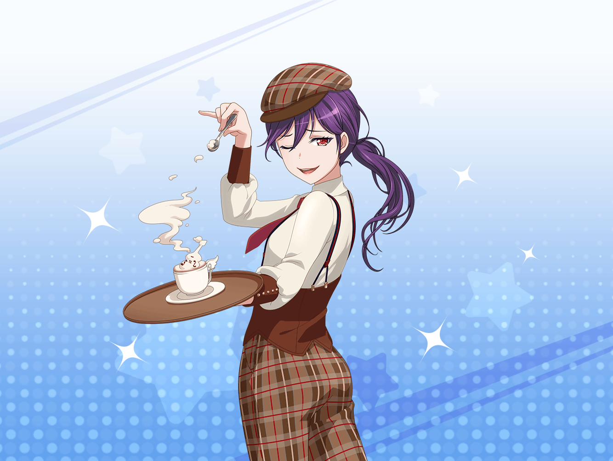

ショッピングモール
薫
おや、{{userName}}さんじゃないか。
こんなところで会うとは奇遇だね
薫
私はこれから映画を見るところさ。
とても儚い映画がやっていてね……
薫
夢を追いかける一人の少女が、
困難に立ち向かうという物語なんだ
薫
これでもか、これでもかと少女に降りかかる、
ありとあらゆる不幸と災難……！
薫
それを乗り越える少女の姿が、
涙なしには見られないと評判なんだよ
薫
ところで、{{userName}}さんは買い物帰りかい？
薫
なるほど、これからカフェに……
きっと儚い時間を過ごすのだろうね
薫
そうだ、カフェといえば、２駅先に新しいカフェができてね。
かわいい子猫ちゃん達の間で有名になっているんだ
薫
私も行ってみたよ。
儚く甘美なひと時を過ごすことができた……！
薫
ああ、その時は花音と千聖、それから美咲と彩と
一緒に行ったんだ。少し意外な組み合わせかもしれないね
薫
いろいろあってね。千聖と花音の儚い頑張りを
私達三人で見守っていたんだ
薫
……フフ。
あの時の二人は、何か大きなことに挑戦しているかのような
とてもいい表情をしていたよ
薫
もしかしたら、映画の少女のように
何か困難を乗り越えてきたのかもしれないね
薫
そうだとしたら……私は、
あの時の千聖が笑顔であったことが嬉しい
薫
……きっと、花音が共にいたからということもあるんだろうね
薫
千聖はいつも、頑張りすぎるほどに頑張ってしまう……
彼女一人では、困難に対して過度に身構えていたかもしれない
薫
花音といる時には、そんな彼女も少し肩の力が抜けている
薫
私はね、千聖にそんな相手が現れてくれて
本当に良かったと思っているんだ
薫
彼女の古い友人の一人としてね。フフ
薫
おっと、そろそろ映画が始まってしまう。
また今度ゆっくり話そうか
薫
では、{{userName}}さん。良い１日を